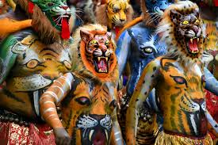

Welcome...
Explore and Enjoy...
THRISSUR
Thrissur is also known as the Cultural Capital of Kerala because of its cultural, spiritual and religious leanings throughout history.Thrissur is famous for fostering classical Keralan performing arts, religious sites and the renowned Thrissur Pooram festival, Onam festival and Vadakkumnathan Temple. Thrissur is the short form of Thiru-Shiva-Per-Ur which literally means “a city with three temples of Lord Shiva”. Thrissur later became anglicised to Trichur. Thrissur is from where Kerala gets a fair share of its festive glitter.